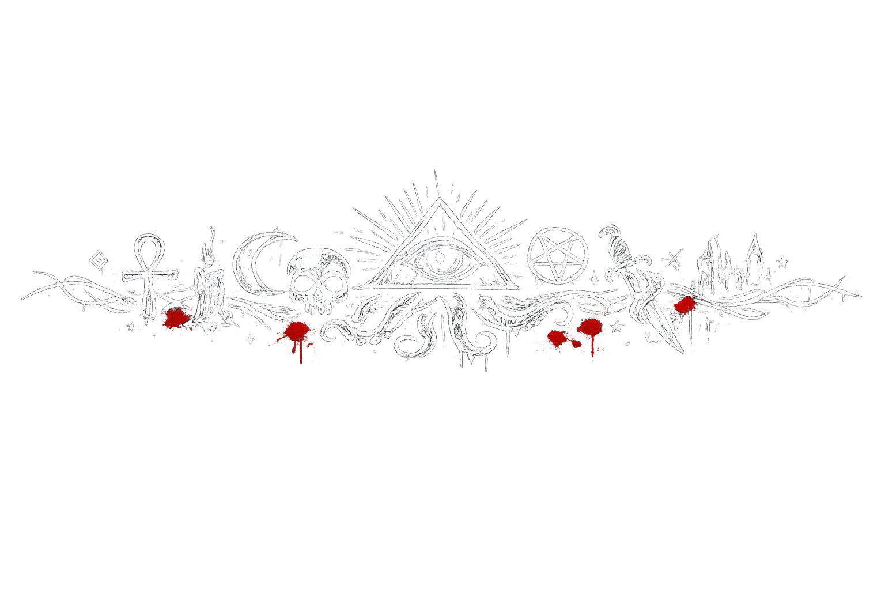

In diesem Abschnitt werden die wichtigsten Begriffe erklärt und ein paar wichtige Personen vorgestellt.
Danach findest du einige Kurzgeschichten, die dir einen Einblick in die Spielwelt geben sollen.
Diese Kurzgeschichten sollen dir Szenen vorstellen, die du in der Spielwelt erleben könntest.
Sie stellen aber nicht die Gesamtheit des Larps dar, sondern zeigen eher die Möglichkeiten der "In-Medias-Res"-Szenen auf.
Du kannst zwischen diesen Szenen mit sehr viel sozialem Spiel rechnen, das während der Veranstaltungen stattfindet.
Ich hoffe, du hast Spaß beim Lesen!
Glossar
Die Träume des wahnsinnigen Gottes
Die Realität ist hinüber. Wahnsinn sickert in unsere Welt. Manche Dinge stimmen nicht mehr. Ein schlafender Gott, dessen Gedanken fremdartig sind, hat an der Stadt Gefallen gefunden. Seine Träume verzerren alles, was sie berühren. Die Wesen, welche die Träume bemerkt haben, versuchen, bei Verstand zu bleiben. Manche probieren, die Träume für ihre eigenen Zwecke zu verwenden. Die Zukunft wird zeigen, ob sie mutig oder einfach nur dumm sind. Jetzt kann es ihnen Vorteile verschaffen, auch wenn der Preis manchmal hoch ist.
Das Berlin-Paradox
Je seltsamer etwas ist, desto mehr wird es von den Berlinern ignoriert. Du könntest mit einem brennenden Dinosaurierkostüm durch die U8 rennen, und niemand würde es interessieren. Genau deswegen kann eine verborgene Welt in Berlin existieren. Sie wird einfach ignoriert und als banaler Wahnsinn der Stadt abgetan.
Verfluchtes Gold
Berliner Okkultisten zahlen mit verfluchtem Gold. Für Personen, die vom Mythos berührt worden sind, scheinen die Münzen und Edelsteine, die sie zum Zahlen verwenden, harmlos zu sein. Wenn man diese verfluchten Reichtümer an Unwissende weitergibt, verändern sich die Empfänger. Zuerst fängt es mit großer Gier an; es ist unglaublich einfach, Unwissende mit diesem Gold zu bestechen. Manchmal treten aber schon nach kurzer Zeit Veränderungen in den bestochenen Personen auf. Zuerst sind diese Veränderungen innerlich und ändern das Verhalten der Person. Was danach geschieht, ist nicht vorhersehbar.
Die Traumlande
Neben der Realität, in der wir uns physisch befinden, existiert noch eine weitere Realität, in der sich unser Verstand befindet. Manchmal können wir diese Lande in unseren Träumen betreten. Es gibt aber auch Möglichkeiten, diese Daseinsebenen mit Hilfe von Rauschmitteln wie Lotus und goldenem Wein zu betreten. Die Traumlande sind seltsam. Sie verbinden den Verstand vieler Wesen miteinander. Manche behaupten, dass man sie benutzen kann, um auf andere Planeten, in andere Zeiten oder sogar andere Realitäten zu reisen.
Magie
Magie existiert. Wenn du sie benutzt, wird sie dich verzehren. Magie kann sowohl deinem Körper als auch deinem Geist Unaussprechliches antun. Der Gebrauch von Magie umfasst auch das Verwenden von mystischen Gegenständen und alchemischen Substanzen. Jeder ist dazu in der Lage, Magie zu verwenden; der Anwender muss nur erlernen, wie es funktioniert. Das Anwenden von Magie ist jedoch ein dunkles und gefährliches Unterfangen. Viele Magier verlieren sich in ihrer Sucht nach Macht und Wissen, bis ihr Körper entstellt und ihr Geist zerrissen ist.
Seltsame Wissenschaften
Manchen Forschern ist es gelungen, Okkultes mit Technologie zu verbinden. Manche technologischen Errungenschaften der letzten Zeit sind so seltsam, dass man sie sich eigentlich nur noch durch den Einfluss des wahnsinnigen Gottes erklären kann. Es gibt Gerüchte über außerirdische Technologie, die weit über unseren Wissensstand hinausgeht. Diese Technologien sind auch nicht ungefährlicher als Magie. Das SOURCE-Net ist ein Bereich des Darknets, den die Okkultisten benutzen, um Informationen auszutauschen.
Der 3. Kataklysmus
Wir haben Anzeichen dafür gefunden, dass die Welt bereits zweimal untergegangen ist. Manche halten die Träume des wahnsinnigen Gottes für ein Omen, dass uns ein weiterer Kataklysmus bevorsteht. Wir haben Überreste der vergangenen Kataklysmen gefunden. So entdeckten wir den Goldenen Wein und den Lotus. In alten Schriften ist von fremdartigen Kulturen, Zivilisationen und Ländern wie Atlantis und Lemuria die Rede.
Lotus
Eine Pflanze aus einem vergangenen Zeitalter. Lotus kommt in verschiedenen Farben vor. Er ist ein starkes Rauschmittel und kann je nach Farbe und Verarbeitung eine andere Wirkung haben. Er kann starke Halluzinationen verursachen, Paralyse und Raserei hervorrufen oder Menschen gefügig machen. Es ist auch Lotus, das als Droge benutzt wird, um die Traumlande zu betreten.
Goldener Wein
Goldener Wein wurde in den Ruinen eines verlassenen Zeitalters entdeckt. Er ist ein starkes Rauschmittel, das einen wohligen Effekt hervorruft. Das Wunderliche an diesem Wein ist, dass er schwerste Verletzungen heilen kann. Allerdings macht er auch schwer abhängig. Die namenlose Stadt, in der man ihn entdeckt hat, wurde bereits vor dem zweiten Kataklysmus zerstört, da die gesamte Stadt von diesem Rauschmittel abhängig war. Soweit wir wissen, wurden die Bewohner einer nach dem anderen von einem lebenden Schatten verschlungen.
Alte Götzen
Die Verehrung alter Gottheiten ist wieder aufgekommen. Es gibt eine Vielzahl von Kulten, die alte Götter und Dämonen verehren. Nyarlathotep, Pazuzu, Shub-Niggurath, Lamaschtu, Ishtar, Cthulhu, Ahriman, Dagon und Enki, um nur einige zu nennen. Manche Kultisten behaupten, dass sie direkt mit diesen Wesen kommunizieren können. Die Verehrung findet an geheimen Schreinen und in versteckten Tempeln statt. Während dieser Zeremonien werden häufig grauenhafte Rituale und Praktiken vollzogen.
Geheimgesellschaften
Der Esoterische Orden ist von Geheimgesellschaften durchzogen. Um einige Beispiele zu nennen: Die Katakysmiker, welche die Apokalypse herbeisehnen. Die Loge von Ulthar erforscht die Traumlande, und die Ahrimiten suchen nach Wegen, die Unsterblichkeit zu erlangen. Die Fornax treiben die okkulten Wissenschaften voran, um die Geheimnisse des Universums zu entschlüsseln. Es gibt eine Diebesgilde, die angeblich von einem sprechenden Schädel mit edelsteinernen Augen angeführt wird.
Der Esoterische Orden
Der "Esoterische Orden" ist eine Art geheime Gesellschaft der Wissenden; allerdings ist diese Gesellschaft nicht geeint, sondern eher zerstritten. Es ist eine lose Verbindung von Individuen, die sich mit dem Okkulten beschäftigen. Tatsächlich könnte man den Esoterischen Orden als Ansammlung von Bekanntschaften sehen, die manchmal gut und manchmal ... eher katastrophal gelaufen sind.
Die Unheil-Bar
Diese Bar ist ein Treffpunkt für die Berliner Okkultisten. Keiner weiß genau, wo sich die Unheil-Bar befindet. Manchmal fühlt man eine Art Ziehen an seinem Verstand und hat das Bedürfnis aufzubrechen. Wenn man diesem Bedürfnis nachgeht, landet man manchmal in der Unheil-Bar. Wenn man bewusst nach der Bar sucht, ist die Bar unauffindbar. Man vergisst den Weg und verläuft sich in der Stadt.
Wichtige Personen
Der maskierte Mann
Der maskierte Mann besucht Menschen in ihren Träumen, um ihnen Arbeit anzubieten. Er ist der HR-Manager einer unbekannten Firma. Diese Firma beschäftigt sich vermutlich mit dem Wahnsinnigen Gott. Bisher ist es aber noch niemandem gelungen, Genaueres herauszufinden.
Der blinde Fritz
Keiner weiß genau, wer der blinde Fritz ist, aber alle sind sich sicher, dass er inzwischen kein Mensch mehr ist. Angeblich hat er einen regen Appetit auf Menschenfleisch. Die Berliner Okkultisten betreiben Handel mit ihm; er akzeptiert Goldmünzen als Bezahlung für Goldenen Wein und Lotus. Manchmal hat er auch seltsamere Dinge im Angebot.
JWD
Keiner weiß, wer JWD ist; es wird aber vermutet, dass JWD kein Mensch ist, da es Signale aus dem Fornax-Cluster sendet.
Thunk!
Thunk-thunk. Dein Kopf schmerzt von einem Schlag, der dir vor einer unbekannten Zeit das Bewusstsein
genommen hat.
Dann noch einmal: Thunk. Du presst dein Ohr gegen das Holz der Tür,
während du dem Geräusch lauschst. Unter der Tür fällt ein schwacher Lichtstreifen durch den Spalt.
Er ist so schwach, dass noch immer bunte Flecken vor deinen Augen in der Finsternis tanzen.
Du kannst kaum atmen. Der süße und zugleich herbe Gestank von Verwesung liegt so schwer in der Luft,
dass er eher ein Geschmack ist. Deine Handgelenke schmerzen,
bis vor kurzem waren sie noch gefesselt. Gedankt sei Dagon,
der dich mit übermenschlicher Kraft gesegnet hat. Vorsichtig öffnest du die Tür.
Der Gestank wird schlimmer und schlägt dir wie eine feuchte Wolke entgegen. Thunk.
Der Raum wird von dem flackernden Licht eines Fernsehers erhellt,
leise hörst du das auf Band aufgenommene Gelächter einer Sitcom.
Im Schein des Fernsehers erkennst du, dass die ehemals weißen
Wände mit dunklen Schmierereien übersät sind. Nur wenige Zentimeter von dir entfernt,
auf der anderen Seite der Tür, die jetzt einen Spalt weit offen steht,
ruft jemand: "Beeil dich, Schlampe! Ich hab Hunger." Ein Schatten erscheint in einem Türrahmen auf der
anderen Seite des Raumes,
er gehört zu einer beleibten Frau mit zerzausten Haaren. Du siehst sie ausholen und etwas durch den
dunklen Raum schmeißen.
Es prallt mit einem harten, metallischen Aufprall gegen die Tür, hinter der du dich versteckst.
Jetzt oder nie.
Du stürmst durch die Tür; sie prallt mit einem erstaunlich sanften Geräusch gegen die Couch, die direkt
daneben steht.
Mit einem Scheppern rutscht das Wurfgeschoss der Frau über den Boden. Es ist ein Beil. Sie zeigt auf dich
und schreit: "Da!"
Während du dich bäuchlings auf den Boden wirfst, um nach dem Beil zu greifen,
rollst du dich auf den Rücken, nur um zu sehen, wie ein dürrer Mann mit schlabbriger Haut,
der nur in eine Feinrippunterhose gekleidet ist, sich auf dich schmeißt. Du schwingst das Beil.
Thunk. Es dringt tief in sein Schlüsselbein ein.
Er fletscht die Zähne, die spitz sind wie die eines Raubtiers. Er bespritzt dich beim Fauchen mit
Speichel.
In seiner Mimik ist wenig Menschliches zu erkennen. Du wirfst dich wieder herum,
während du dich mit den Händen vom Boden abdrückst,
um auf die Beine zu kommen; da greift dir etwas mit harter Hand in die Haare am Hinterkopf.
Es ist die Frau, die sich nun mit ihrem ganzen Gewicht in deine Seite schmeißt. Du gerätst ins Taumeln.
Sie versenkt ihre Zähne, die genau so spitz sind wie die des Mannes, in deinen Hals.
Du reißt dich los und taumelst in den Flur. Auf der anderen Seite muss der Ausgang sein.
Tastend erreichst du die Tür.
Fuck. Abgeschlossen...
Irrwege
Es ist eine warme Sommernacht. Du spürst den warmen Asphalt unter deinen nackten Füßen.
Du irrst durch die Straßen. Neonlichter blenden dich im Dunkeln. Autos ziehen an dir vorbei.
Du hast schon vor einer ganzen Weile die Orientierung verloren. Du weißt, dass du weiter musst,
aber du weißt nicht, wohin dich dein Weg führen wird. Du stolperst durch eine Tür.
Beim Eintreten liest du die Schrift auf dem Glas: "Unheil-Bar". Du setzt dich an einen Tisch,
nahe dem Eingang, da du kein Geld hast. Du lauscht der Musik, einer Mischung aus dunklem Jazz,
schwerem Metal und Grunge. Ein Fremder stellt dir ein Glas vor dich hin. Es ist mit Eis und einer grünen Flüssigkeit gefüllt.
Das Eis schmilzt langsam. Das Schmelzwasser zieht helle, milchige Adern durch die grüne Flüssigkeit.
Der Drink schmeckt nach Lakritz und hinterlässt ein Brennen im Mund. Ab diesem Moment erinnerst du dich nur noch an Fetzen der Nacht.
Eine Gruppe von Menschen arbeitet an einer Maschine. Du kannst ihrem Gespräch über nicht-euklidische Frequenzen nicht folgen.
Die Gruppe holt neue Getränke, da es keinen Barkeeper gibt; sie schenken sich selbst ein. Sie bezahlen mit altertümlichen Goldmünzen.
Eine junge Frau setzt sich neben dich. Du würdest sie als klassisch schön bezeichnen. Sie erzählt dir von einem bevorstehenden Kataklysmus und ihrem Plan, einen Gott zu töten.
Für ihren Plan möchte sie deine Hilfe. Sie lässt nicht locker und erzählt dir, dass sie verflucht sei.
Sie gießt dir immer wieder nach, sobald dein Glas leer ist.
Als du gehst, verschwimmt alles vor deinen Augen. Du stolperst durch die Straßen und weißt nicht mehr, wo du bist.
Du schreckst aus dem Bett, weil die Tür deines Zimmers geöffnet wird. Drei Personen in weißen Kitteln betreten den Raum.
Eine der drei Personen tritt in den Vordergrund. Es ist ein kleiner Mann mit kurz geschnittenen Haaren und Brille.
Er spricht dich mit freundlicher Stimme an: "Guten Morgen. Wie geht es Ihnen?" Du richtest dich vollständig auf,
schiebst die Decke beiseite und lässt die Füße aus dem Bett baumeln. Dir wird schwindelig. Dein Mund ist trocken.
Übelkeit überkommt dich. Der für dich zuständige Psychiater spricht dich an: "Fühlen Sie sich gut? Sie waren eine Weile abwesend."
Du zögerst kurz. "Mir ist schlecht, ich habe einen Kater. Ich habe wohl gestern Abend zu viel in der Bar getrunken. War ein komischer Abend."
"Sie haben die Station schon seit Wochen nicht mehr verlassen. Anscheinend müssen wir die Medikamente neu einstellen. Sie sagten, Ihnen sei schlecht?"
Nachdem Sie dein Zimmer wieder verlassen haben, legst du dich hin, um deinen Schwindel auszugleichen.
Deine Hand streift ein kleines Stück Metall. Du ziehst es unter der Decke hervor. Eine mit grüner Patina überzogene Goldmünze...
Falsche Riten
Langsam intonierst du die Worte in einer alten Sprache, die du selbst nicht verstehst. Du bist dir über den Ursprung der Sprache nicht sicher. Es sind nur drei Worte, die du wie ein Mantra wiederholst. Dir ist warm. In dem Raum sind unterschiedliche Schalen mit Räucherwerk aufgestellt. Jeder Atemzug füllt deine Lungen mit würzigem Rauch, der in dir ein Gefühl von Schwindel auslöst. In der Mitte des Raumes befindet sich ein Beschwörungskreis, den du mit deinem eigenen Blut gezogen hast. Die dafür notwendigen Wunden hast du dir durch Selbstkasteiung zugefügt. Die Schmerzen sind wichtig für das Ritual. Sie weisen dem Wesen den Weg zu dir. Das Blut macht dich klebrig; ein dicker Tropfen läuft langsam deinen Rücken hinab. "Der Kreis, er ist falsch! So verlierst du die Kontrolle über die Beschwörung!" ertönt eine Stimme aus der Ecke des Raumes. Es ist die Stimme eines Mannes, den du auf einem Drehstuhl gefesselt hast. Er scheint gerade wieder zu Bewusstsein gekommen zu sein; sein Gesicht ist rot und geschwollen, seine Augen schwarz umrandet. "Ich will es nicht kontrollieren, das ist Teil des Paktes." erwiderst du unbekümmert. Du weißt, dass es soweit ist; du fühlst etwas im Raum und siehst ein Flimmern im Rauch über dem Beschwörungskreis. "Du weißt nicht, was du tust!" schreit der gefesselte Mann. Er wirft sich in seinen Fesseln umher, bis der Stuhl umkippt. Gut. Dann halt so, denkst du dir. "Halt still, es braucht einen Körper." sagst du, während du ihn über den Boden in den Kreis schleifst. Sein Gesicht verschmiert dein Blut, das du auf dem Boden verteilt hast. Ein Krampf durchfährt seinen Körper, bevor er erschlafft. Ein paar Sekunden herrscht Stille, bevor sich seine Gliedmaßen auf unnatürliche Art verrenken und er sich erhebt. Allerdings richtet er sich nicht auf, wie ein Mensch es tun würde. Er bewegt sich auf allen vieren, wie ein Tier. Du gibst der Kreatur einen Moment, um sich zu orientieren. In der Zeit ziehst du dir dein Shirt an. Das Blut an deinem Körper lässt es an deinem Rücken kleben. Du sprichst die Kreatur an: "Wir sehen uns nicht zum ersten Mal." stellst du fest. "Das letzte Mal, als wir uns gesehen haben, hast du mich fast getötet und mir einen Schrumpfkopf geklaut." Die Kreatur starrt dich an. Sie zerkaut sich die Fingernägel. "Dieser Schrumpfkopf ist mir sehr wichtig; er flüstert mir Dinge zu, die sonst niemand weiß." Die Kreatur nickt. "Ja, ich habe ihn dir gestohlen, aber ich habe ihn nicht mehr." Du überlegst kurz. "Sag mir, wer dich beschworen hat."
Nie wieder allein
Deine Schritte hallen leise von den kargen Wänden des langen Flures wieder. Die Wände sind weiß. Der Boden ist minz-grün. Die Leuchtstoffröhren an der Decke flackern leicht. Du befindest dich im Keller der Charité. Es war leicht, das Personal mit Gold zu bestechen, damit sie dir den Weg weisen. Am Ende des Flures befindet sich eine silberne Tür aus Edelstahl. Ein paar Bahren stehen ungeordnet davor. Die völlig überarbeiteten Pfleger hatten keine Lust mehr auf "Leichen Tetris". Der Pathologe ist schon wieder Zuhause, du solltest bis morgen früh deine Ruhe haben. Allerdings hast du auch nicht alle Zeit der Welt, du willst weg sein bevor das Gold die Pfleger verändert. Mit etwas Glück wird das Chaos deine Spuren verwischen. Du öffnest die Edelstahltür so weit wie es geht und quetscht dich durch den Spalt. Der Raum dahinter ist mit den gleichen Bahren vollgestellt. Du kramst dein Smartphone hervor. Du weißt nichts über die Person, die du suchst. Du hoffst, dass dir der Scanner der SOURCE-App weiterhelfen wird. Nach und nach deckst du die Leichen ab und scanst die Gesichter der Toten. Du weißt, dass der Symbiont, nach dem du suchst, in der Nasennebenhöhle über dem Gaumen lebt und sich mit dem Kleinhirn verbindet; deswegen reicht es aus, nur die Köpfe zu scannen. Du brauchst ungefähr eine halbe Stunde, um die richtige Leiche zu finden. Der Körper gehörte einer jungen Frau. Du öffnest deinen Rucksack und überlegst kurz, ob dein Magen stark genug für das ist, was du gleich tun wirst. Im Stillen beschließt du, dass du jetzt schon zu weit gegangen bist, um abzubrechen. Du kramst ein Skalpell, einen Hammer und einen Stechbeitel aus dem Rucksack. Du drehst den Kopf zur Seite und zertrümmerst den Kieferknochen mit einem schweren Schlag. Du wiederholst den Vorgang auf der anderen Seite, nachdem du den Kopf gewendet hast. Nachdem du dein grausiges Werk betrachtet hast, schneidest du beide Mundwinkel auf. Die Schnitte erreichen fast die Ohren. Mit einem harten Griff greifst du in den Schopf der Leiche und überstreckst den Hals, um den Gaumen freizulegen. Du bist überrascht, weil du eine pulsierende Bewegung im Rachen der Leiche wahrnimmst. Anscheinend wird es leichter, den Symbionten freizulegen, als du vermutet hast. Dennoch setzt du das Skalpell mit festem Druck an der, im Rachen, freigelegten Stelle an. Die Kreatur kommt dir entgegen. Sie bahnt sich den Weg ins Freie. Zuerst siehst du einen Tentakel, der einem Wurm ähnlich aus dem von dir geschaffenen Schnitt quillt. Mit sanften, aber festem Griff wickelt sich der Greifarm um deinen Zeigefinger. Erschreckt ziehst du deine Hand zurück. Dabei ziehst du aus Versehen den Symbionten aus der Leiche. Die Kreatur erinnert an eine Kaulquappe mit zwei Greifarmen. Der Symbiont spürt deine Körperwärme und rollt sich in deiner Hand zusammen. Er scheint sich wohl zu fühlen. Aus seiner Mitte sprießt ein Wurmfortsatz, dessen Ende an einen Papageienschnabel erinnert. Zärtlich kratzt er über die Vene auf der Innenseite deines Handgelenkes. Du bahnst dir einen Weg durch die Bahren. Dein Ziel ist das Waschbecken in der Ecke des Raumes. Mit lauwarmen Wasser wäscht du das geronnene Blut der Leiche von dem Symbionten. Nachdem du fertig bist, nimmst du ihn vorsichtig in den Mund. Er ist geschmacklos und fühlt sich an wie ein körperwarmes Fruchtgummi. Du spürst ihn leicht in deinem Mund hin und her wackeln. Du musst würgen, als einer seiner Tentakeln dein Zäpfchen streift, er sucht den Eingang zur Nasennebenhöhle. Nachdem er sie ertastet hat, geht es schnell. Er zieht sich durch deinen Hals und quetscht sich durch die Öffnung. Du spürst Flüssigkeit deinen Rachen hinunter rinnen. Dein Hals wird taub. Das muss die betäubende Wirkung seines Speichels sein. Du weißt nicht, wie lange er brauchen wird, um sich zu deinem Kleinhirn vorzuarbeiten.